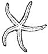
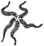
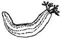
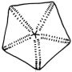
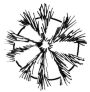
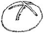

|
|
| echinoderms text index | photo index |
| Phylum Echinodermata |
| Echinoderm shapes |
| The body of an echinoderm can be divided radially into five equal parts, somewhat like cutting a round cake into slices (also described as being symmetical along five axes). Other unique echinoderm features are their spiny skin, tube feet and their use of seawater to pump up their bodies and move. All echinoderms have these basic features, although at first glance they appear very different. |
|
 Sea star  Brittle star  Sea cucumber |
Shapes and spines Let's see how the various types of echinoderms shape up! Sea stars usually have five arms. They have short or tiny spines. Sea stars belong to Subclass Asteroidea. A cushion star is a roundish sea star with very short arms. Imagine a round cushion star with spines which may be long or thick. This is what a sea urchin looks like! The round body of a sea urchin can also be divided into five parts. A flattened sea urchin with short spines is a sand dollar! It can still be divided into five parts. A relative of the sea urchin called a heart urchin is more egg-shaped with longer spines. It usually burrows in the sand and is rarely seen above ground. Sea urchins, sand dollars and heart urchins belong to Class Echinoidea. Imagine a sea urchin that is long like a sausage without any obvious spines and you have a sea cucumber! It too can be divided into five parts. Sea cucumbers belong to Class Holothuroidea. A brittle star is like a sea star with long and skinny arms. Brittle stars belong to Subclass Ophiuroidea. A feather star is like a brittle star with many more arms. Instead of lying flat against the surface, these arms are held up like branches of a bush to gather food from the water. Feathers stars belong to the Class Crinoidea. All these creatures are echinoderms and belong to the Phylum Echinodermata. |
 Cushion star  Sea urchin  Heart urchin |